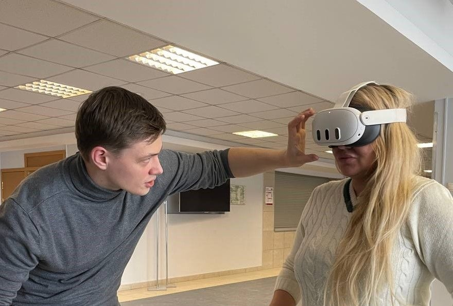
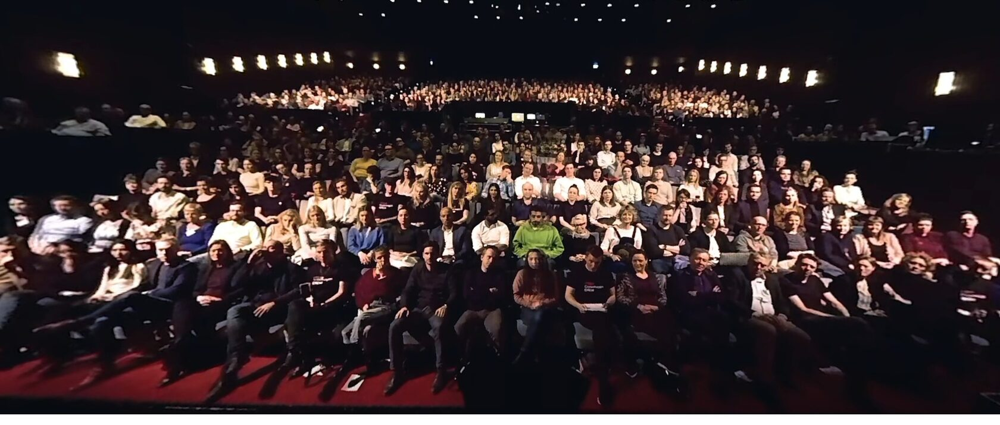

1000 человек прошли VR-практику ЦКИ для коррекции глоссофобии
За последние два года более 1000 человек прошли практику по преодолению страха публичных выступлений (глоссофобии) с помощью VR-технологий. Разработанная пятиступенчатая методология, сочетающая виртуальную экспозицию с голосовыми практиками, доказала свою высокую эффективность: 84% участников сообщили о значительном снижении уровня тревоги, что подтверждается объективными психофизиологическими показателями.
Практическое применение и охват
Исследователь и сооснователь Центра когнитивных исследований, Сергей Степанов, в течение двух лет проводит практические семинары, направленные на коррекцию глоссофобии. За это время методология была отработана с более чем 1000 участниками в десятках организаций и команд, включая такие площадки, как ВШЭ, РАНХиГС, Ростех и Яндекс.

Методология:
В основе исследования лежит пятиэтапный протокол, обеспечивающий комплексную и последовательную работу с тревогой.
- Первичная диагностика. Проводится психологическое анкетирование для определения исходного уровня тревожности и выявления индивидуальных триггеров страха.
- Регистрация базовых маркеров. Участник записывает короткое минутное выступление, во время которого фиксируются объективные показатели стресса: сердечный ритм и акустические характеристики голоса (темп, тембр, частота).
- Вокально-дыхательная подготовка. Под руководством эксперта по работе с голосом участники осваивают техники диафрагмального дыхания и соматической регуляции для управления физиологическими проявлениями тревоги. (Партнер-эксперт ЦКИ - Устинова Валерия Альбертовна, сценический тренер ETCetera, Профессор ВШЭ, практика - артисты Большого театра, Teatro alla Scala)
- In-Virtuo экспозиция. Центральный этап, где участник с помощью VR-гарнитуры многократно выступает на виртуальной сцене. Это позволяет мозгу в безопасной среде переоценить ситуацию и постепенно угасить условную реакцию страха.
- Анализ и обратная связь. После каждой VR-сессии проводится совместный анализ объективных данных и видеозаписи, что позволяет участнику отслеживать прогресс и сознательно корректировать свое поведение.
Frontiers: "VR для преодоления страха публичных выступлений"
Двуединый подход
- Работа с когнитивными триггерами через VR
- Работа с соматическими проявлениями через голос
Позволяют сформировать комплексный и устойчивый навык саморегуляции.
Измеримые результаты:
Сравнение психофизиологических маркеров до и после курса показало статистически значимые улучшения.
- Стабилизация сердечного ритма. Уменьшилась амплитуда пиковых значений ЧСС перед и во время выступления.
- Нормализация вокальных характеристик. Речь становилась более плавной, а снижение изменчивости частоты основного тона свидетельствовало о снятии напряжения с голосовых связок.
- Снижение кинесических индикаторов стресса. Участники демонстрировали более открытые позы, естественную жестикуляцию и уверенный зрительный контакт с аудиторией.
Эти результаты доказывают, что цикличное применение VRET в сочетании с голосовыми практиками формирует устойчивый навык саморегуляции на физиологическом уровне.

Будущее метода: Интеграция с нейроинтерфейсами
Проведенные сессии подтверждают, что VRET (экспозиционная терапия в виртуальной реальности) является валидным и масштабируемым инструментом для формирования «когнитивного иммунитета» к социальным фобиям.
Следующим шагом в развитии методологии является интеграция VR-систем с неинвазивными нейроинтерфейсами (ЭЭГ). Это позволит перейти от регистрации косвенных маркеров стресса к прямому мониторингу нейронных коррелятов тревожности в реальном времени. Такой подход откроет возможность для создания адаптивных VR-сред, которые динамически подстраиваются под психоэмоциональное состояние пользователя, реализуя персонализированные протоколы терапии на принципиально новом технологическом уровне. И пока это технологическое будущее становится реальностью, уже сегодня доказанные VR-методики позволяют решать насущные задачи в образовательных и корпоративных средах.
Ключевой вопрос заключается в готовности организаций интегрировать эти инструменты для повышения коммуникативной компетентности и психологической устойчивости своих команд.